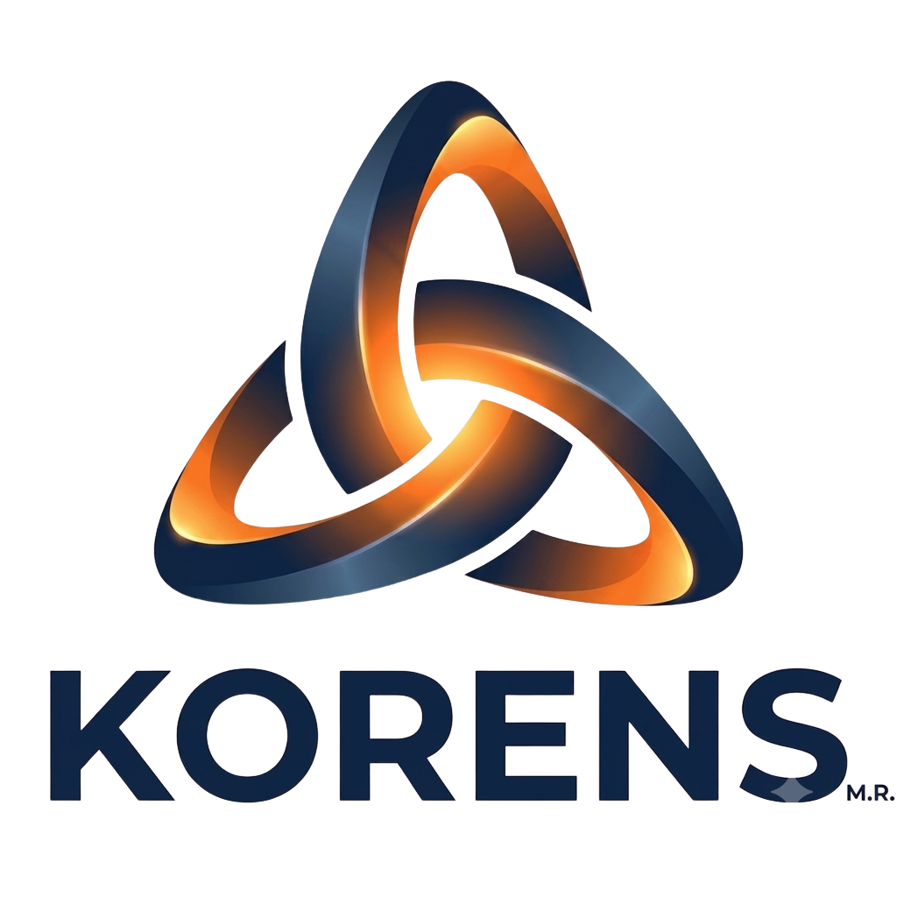
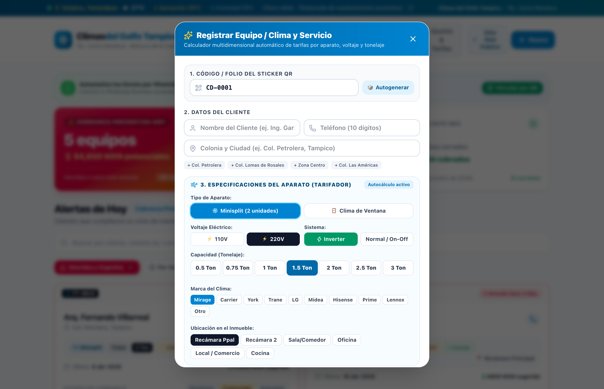
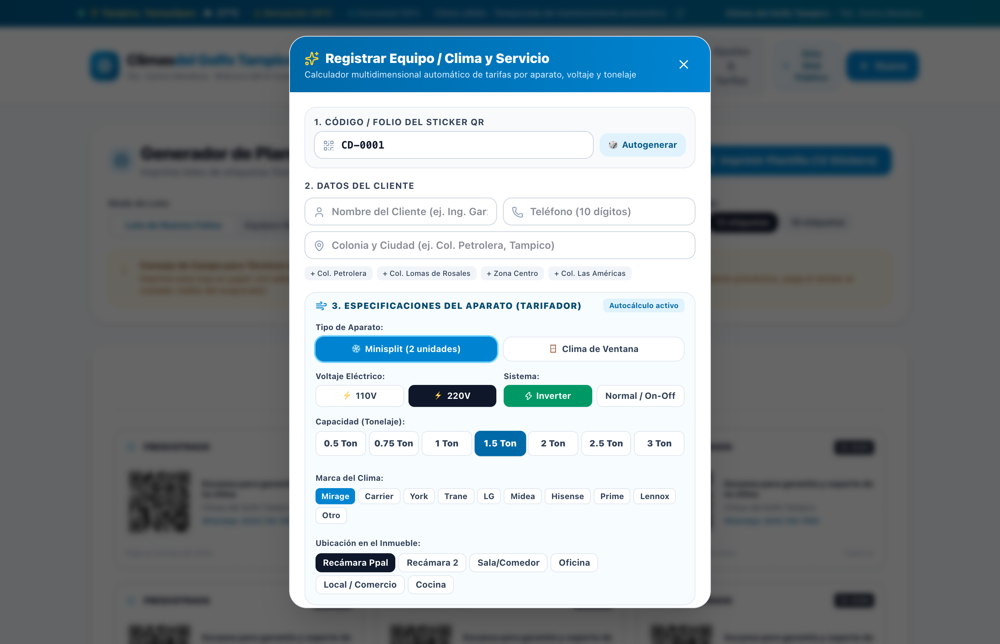
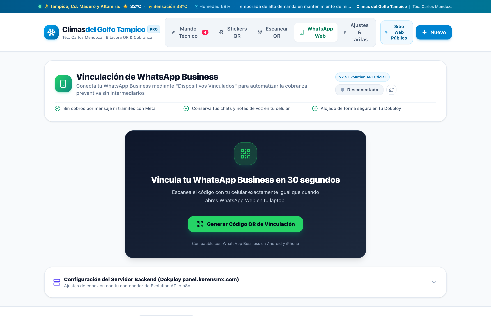
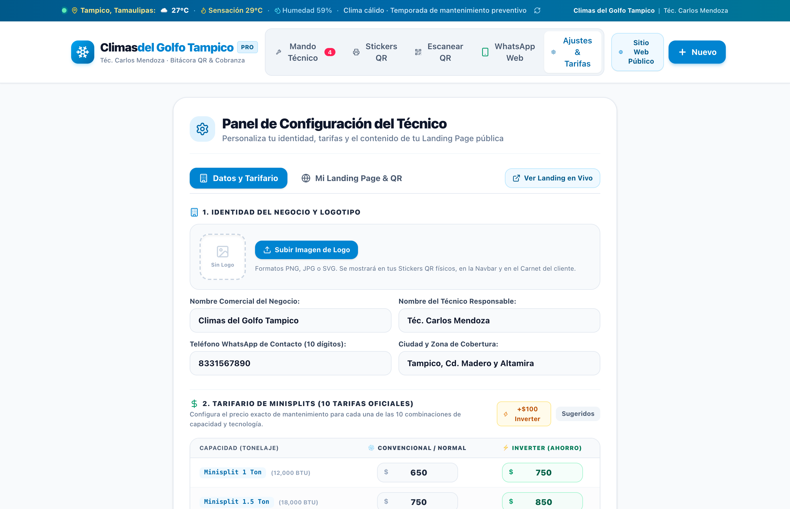
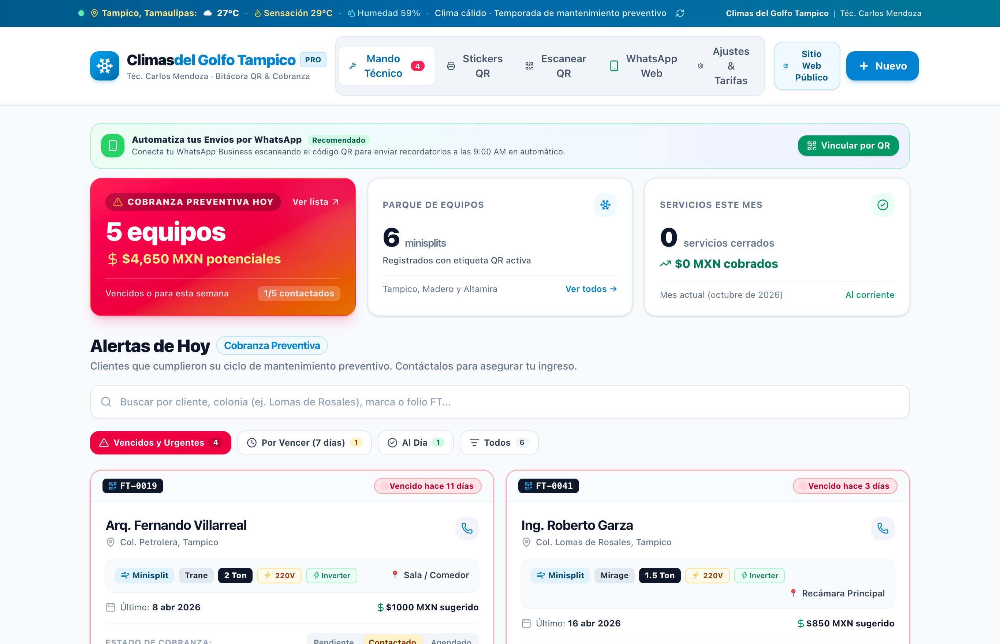
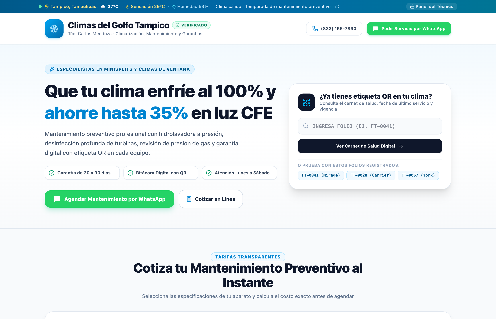

La plataforma inteligente de control de aires acondicionados, carnets digitales QR y cobranza automática para técnicos profesionales.
Cada clima tiene su huella digital única. El cliente nunca perderá tu teléfono.
Recordatorio automático a los 6 meses (9:00 AM) para cobrar el mantenimiento.
Explicado paso a paso con manzanitas para que lo domines en 5 minutos.
Imagina que tienes una alcancía mágica y un robot mayordomo. En lugar de anotar clientes en una libreta mojada con agua de desatasco o en notas del teléfono que se borran, FrescoTrack guarda cada clima que limpias o instalas. A los 6 meses exactos, el robot le manda un mensaje educado a tu cliente diciendo: "¡Hola! Ya pasaron 6 meses y tu clima necesita servicio, ¿agendamos?". ¡Tú solo recibes la confirmación y vas a cobrar tu dinero!
FrescoTrack fue concebido, diseñado y construido por el equipo de ingeniería de KORENS para resolver el problema #1 de los técnicos en México y Latinoamérica: los clientes olvidan darle servicio a sus minisplits y luego llaman a otro técnico que vieron en un volante.
Así como las personas tienen cartilla y los autos tienen libro de servicios, ahora el clima de tu cliente tiene un folio único con su historial técnico: qué gas lleva, qué presión se dejó, qué fecha se limpió y cuándo le toca el próximo servicio.
Una tarjeta de presentación se va a la basura. Un sticker plastificado pegado en la pared junto a la unidad interior (evaporadora) se queda pegado 5 años. Cada vez que el cliente ve el minisplit, ve tu marca y tu código QR.
A los 180 días (6 meses), la app activa una alarma roja en tu pantalla y envía un WhatsApp personalizado con el nombre del cliente y el modelo de su clima para renovar el mantenimiento.
Un técnico promedio tiene 100 clientes al año. Si cada uno te da 2 mantenimientos al año de $750 MXN, ¡tienes $150,000 MXN garantizados solo asegurando que nadie se olvide de ti!
Al entrar a FrescoTrack verás tu Centro de Mando. Arriba tienes los contadores rápidos (KPIs) y el semáforo para saber a quién debes atender hoy mismo.
¡Urgente cobrar! Han pasado más de 180 días. Toca el botón verde para mandar WhatsApp en 1 click.
¡Alerta temprana! Faltan menos de 30 días para cumplir los 6 meses. Ya puedes agendarlo.
¡Todo perfecto! El clima fue limpiado hace poco tiempo. Su carnet muestra cuenta regresiva segura.
1. WhatsApp: Abre el chat del cliente con el mensaje ya redactado.
2. Ver QR: Te abre el Carnet Digital exactamente igual a como lo ve el cliente.
3. Renovar Servicio: Tras hacer el mantenimiento, tocas este botón y el cronómetro reinicia otros 6 meses.
Cuando estés en la casa o negocio del cliente y termines la instalación o limpieza, solo te tomará 45 segundos darlo de alta en FrescoTrack.

Se abrirá la ventana emergente flotante sin salir de donde estás.
Ejemplo: Don Carlos Méndez - 55 1234 5678 (asegúrate de incluir los 10 dígitos).
Indica dónde está colocado (ej. Recámara Principal) y su tonelaje (ej. 1.5 Toneladas Inverter).
Anota el tipo de refrigerante (R410A / R32 / R22) y la presión (ej. 125 PSI). Esto te da imagen de profesional total.
FrescoTrack le asigna su folio único (ej. FT-1042) y programa el recordatorio para dentro de 6 meses.
En la pestaña "Stickers QR" encontrarás la herramienta para imprimir las etiquetas que pegarás en la carcasa o la pared del equipo de tu cliente.

Gracias a la arquitectura multi-tenant de KORENS, cada técnico tiene su propio prefijo (ej. FT-, DK-). Aunque tengas 1,000 equipos registrados, ningún código QR se repite jamás.
Pasa un trapo con alcohol isopropílico en la esquina del minisplit para retirar polvo y grasa.
Presiona firmemente las cuatro esquinas. El código QR queda visible para que cualquiera apunte su cámara.
Dile a tu cliente: "Mire Don Carlos, abra su cámara y apunte aquí". Al ver su carnet en su celular, quedará asombrado.
El dinero en este negocio no está en buscar clientes nuevos todos los días; está en cobrar los mantenimientos de los clientes que ya tienes.

Verás en pantalla un código QR grande generado para tu negocio.
Ve a Ajustes > Dispositivos vinculados > Vincular un dispositivo y apunta al QR de la pantalla.
Cada mañana a las 9:00 AM, el motor revisará qué clientes cumplen 6 meses y les disparará el mensaje.
En esta pestaña está la tabla "Mensajes de Mantenimiento Programados (6 Meses)" con el cliente, folio, fecha exacta y el botón "Enviar Simulación / Probar Ahora" para hacer pruebas.
En la pestaña "Ajustes & Tarifas" tú mandas. Puedes cambiar tu número, tu ciudad, el texto de WhatsApp y los precios de tus 10 capacidades.

| Capacidad del Clima | Tipo Estándar | Tipo Inverter (Ahorrador) |
|---|---|---|
| 1.0 Tonelada (12,000 BTU) | Tarifa 1: Minisplit 1tn | Tarifa 2: Minisplit 1tn Inverter |
| 1.5 Toneladas (18,000 BTU) | Tarifa 3: Minisplit 1.5tn | Tarifa 4: Minisplit 1.5tn Inverter |
| 2.0 Toneladas (24,000 BTU) | Tarifa 5: Minisplit 2tn | Tarifa 6: Minisplit 2tn Inverter |
| 2.5 Toneladas (30,000 BTU) | Tarifa 7: Minisplit 2.5tn | Tarifa 8: Minisplit 2.5tn Inverter |
| 3.0 Toneladas (36,000 BTU) | Tarifa 9: Minisplit 3tn | Tarifa 10: Minisplit 3tn Inverter |
Abajo de tus tarifas tienes una caja interactiva: conforme editas tu mensaje, el simulador te muestra exactamente cómo se verá en el teléfono de tu cliente.
Cuando tu cliente o tú escanean el sticker con cualquier celular, no requiere instalar ninguna aplicación. Se abre al instante su Carnet Digital QR.

Le indica cuántos días faltan para su próximo servicio o si ya está en zona roja de mantenimiento urgente.
Muestra el Folio, Marca, Tonelaje, Refrigerante y Presión PSI que tú le anotaste.
El cliente solo presiona el botón y te manda mensaje con el folio y datos de su equipo listos para agendar.
Cada técnico cuenta con su propia Página Web Comercial personalizada con su propio dominio o subdominio, lista para recibir clientes de internet.

Tus clientes eligen su número de minisplits y capacidad; el sistema calcula el total con tus tarifas configuradas.
Comparte el enlace de tu sitio web en tus redes sociales, perfiles de Facebook y estados de WhatsApp.
Tus clientes verán que operas con infraestructura y tecnología de nivel empresarial respaldada por KORENS.
1. Llegas: Limpias o reparas el clima del cliente.
2. Registras: Abres FrescoTrack, tocas "+ Nuevo Clima", llenas los datos en 45 segundos y pegas el Sticker QR en el equipo.
3. Cobras y te vas tranquilo: El sistema de FrescoTrack creado por KORENS cuidará a tu cliente y te traerá de vuelta a los 6 meses.
| Duda o Situación | ¿Qué debo hacer? |
|---|---|
| ¿El cliente necesita bajar una app? | No. Solo abre la cámara de su celular y apunta al QR. Funciona en iPhone y Android sin instalar nada. |
| ¿Qué hago si cambié mis precios? | Ve a "Ajustes & Tarifas", escribe tus nuevos precios y toca guardar. Se actualizará de inmediato. |
| ¿Qué pasa si el cliente me paga otro servicio antes? | En tu lista de climas, busca al cliente y toca "Renovar Servicio". El cronómetro se reinicia a 180 días. |
| ¿Dónde veo los mensajes que se van a mandar en 6 meses? | En la pestaña "WhatsApp Web", en la tabla "Mensajes de Mantenimiento Programados". |
| ¿Se pueden confundir los stickers de un negocio con otro? | Jamás. Cada negocio tiene su prefijo único garantizado por el motor multi-tenant de KORENS. |
Desarrollado y Respaldado por KORENS®